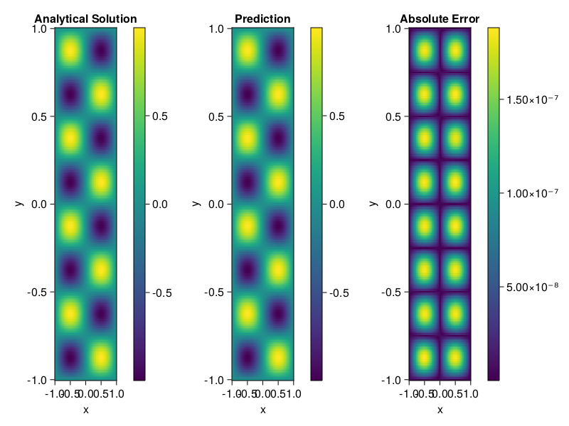

Helmholtz equation
Let us consider the Helmholtz equation in two space dimensions
\[\begin{aligned} &\Delta u(x, y)+k^{2} u(x, y)=q(x, y), \quad(x, y) \in \Omega:=(-1,1)^2 \\ &u(x, y)=0, \quad(x, y) \in \partial \Omega \end{aligned}\]
where
\[q(x, y)=-\left(a_{1} \pi\right)^{2} \sin \left(a_{1} \pi x\right) \sin \left(a_{2} \pi y\right)-\left(a_{2} \pi\right)^{2} \sin \left(a_{1} \pi x\right) \sin \left(a_{2} \pi y\right)+k^{2} \sin \left(a_{1} \pi x\right) \sin \left(a_{2} \pi y\right).\]
The excat solution is $u(x,y)=\sin{a_1\pi x}\sin{a_2\pi y}$. We chose $k=1, a_1 = 1$ and $a_2 = 4$.
using ModelingToolkit, IntervalSets, Sophon, Lux
using Optimization, OptimizationOptimJL
@parameters x,y
@variables u(..)
Dxx = Differential(x)^2
Dyy = Differential(y)^2
a1 = 1
a2 = 4
k = 1
q(x,y) = -(a1*π)^2 * sin(a1*π*x) * sin(a2*π*y) - (a2*π)^2 * sin(a1*π*x) * sin(a2*π*y) + k^2 * sin(a1*π*x) * sin(a2*π*y)
eq = Dxx(u(x,y)) + Dyy(u(x,y)) + k^2 * u(x,y) ~ q(x,y)
domains = [x ∈ Interval(-1,1), y ∈ Interval(-1,1)]
bcs = [u(-1,y) ~ 0, u(1,y) ~ 0, u(x, -1) ~ 0, u(x, 1) ~ 0]
@named helmholtz = PDESystem(eq, bcs, domains, [x,y], [u(x,y)])\[ \begin{align} \frac{\mathrm{d}}{\mathrm{d}y} \frac{\mathrm{d}}{\mathrm{d}y} u\left( x, y \right) + \frac{\mathrm{d}}{\mathrm{d}x} \frac{\mathrm{d}}{\mathrm{d}x} u\left( x, y \right) + u\left( x, y \right) =& - 166.78 \sin\left( 3.1416 x \right) \sin\left( 12.566 y \right) \end{align} \]
Note that the boundary conditions are compatible with periocity, which allows us to apply BACON.
chain = BACON(2, 1, 5, 2; hidden_dims = 32, num_layers=5)
pinn = PINN(chain) # call `gpu` on it if you want to use gpu
sampler = QuasiRandomSampler(300, 100)
strategy = NonAdaptiveTraining()
prob = Sophon.discretize(helmholtz, pinn, sampler, strategy)
@time res = Optimization.solve(prob, BFGS(); maxiters=1000)u: ComponentVector{Float64}(filters = (filter_1 = (bias = [0.23754446786957983; -0.8486989397268094; … ; 0.5460890179916701; -0.45185236721655747;;]), filter_2 = (bias = [-0.167966800945588; 0.5023486751573071; … ; 0.25589333942013914; -0.8476295134182258;;]), filter_3 = (bias = [-0.5768501612000629; -0.4054746354631599; … ; -0.14131127463638388; 0.16894278346120328;;]), filter_4 = (bias = [0.06381266279946564; -0.7344708540229843; … ; 0.5054964692613805; -0.457062668948413;;]), filter_5 = (bias = [-0.43773648868215104; -0.3134394061279301; … ; -0.35926807089813106; -0.03711300596599216;;])), linear_layers = (layer_1 = (weight = [0.20511317137688043 -0.16101149468905288 … 0.3995583771254387 -0.22696889051774563; 0.3340271150948137 0.11001041288515032 … -0.27783509672940376 0.2413376170925274; … ; -0.2214714760530217 -0.1445394850413359 … -0.4568144407770818 -0.2285203518088258; 0.09948766638652613 -0.09621053742774825 … -0.20355268872958 -0.253889927419969], bias = [0.0074349882704231735; -0.001774827877866129; … ; -0.020558065588770016; 0.00024939593096599637;;]), layer_2 = (weight = [-0.15225953767490985 0.22590563552913398 … -0.4011472329981239 -0.11304798877565381; -0.15382198798536398 0.23792336745841508 … -0.15220418693753687 0.3268089047006296; … ; 0.08234503954472708 -0.3951616277118518 … -0.3024235040040704 -0.27605700649792086; -0.36078320538099934 0.3535896455816486 … -0.10070329552387103 -0.014897395580806034], bias = [0.012905842533919873; -0.013915827131503517; … ; -0.006960411398515502; -0.020670017538702467;;]), layer_3 = (weight = [0.19706995241667563 -0.13766946266732755 … 0.32508435046014367 -0.14475298389301788; -0.4976990329773375 -0.4140090039563576 … 0.3087668995224356 -0.0745707914180167; … ; 0.2507791212688157 0.35296288523178954 … -0.3537264423121039 0.3095796521011931; 0.286928333400774 0.28012402123271785 … -0.3471781161617894 0.1145443963373711], bias = [0.0015630147189724046; 0.012907107488355255; … ; 0.0008062028736439813; 0.036742141882371626;;]), layer_4 = (weight = [0.39485016574563786 0.012108813943389347 … -0.399108459367311 -0.2739055179938223; -0.17500851526116765 -0.14293097535254928 … 0.04673164407085644 0.31254514084985174; … ; -0.04995887224880786 -0.46832527286836517 … 0.36436485252027173 -0.16262722304452812; 0.06719545276406423 0.11217227447214695 … 0.028817329819852647 0.14029857078561642], bias = [0.0010855848166933077; 0.000985295500579237; … ; -0.015625831555537723; -0.00030409496318191425;;])), output_layer = (weight = [0.025733695551343118 -0.3168648826864677 … 0.39448941231195084 0.23724662788503453], bias = [0.00497805164097796;;]))Let's plot the result.
phi = pinn.phi
xs, ys= [infimum(d.domain):0.01:supremum(d.domain) for d in domains]
u_analytic(x,y) = sinpi(a1*x)*sinpi(a2*y)
u_real = [u_analytic(x,y) for x in xs, y in ys]
phi_cpu = cpu(phi) # in case you are using GPU
ps_cpu = cpu(res.u)
u_pred = [sum(phi_cpu(([x,y]), ps_cpu)) for x in xs, y in ys]
using CairoMakie
axis = (xlabel="x", ylabel="y", title="Analytical Solution")
fig, ax1, hm1 = heatmap(xs, ys, u_real, axis=axis)
Colorbar(fig[:, end+1], hm1)
ax2, hm2= heatmap(fig[1, end+1], xs, ys, u_pred, axis= merge(axis, (;title = "Prediction")))
Colorbar(fig[:, end+1], hm2)
ax3, hm3 = heatmap(fig[1, end+1], xs, ys, abs.(u_pred-u_real), axis= merge(axis, (;title = "Absolute Error")))
Colorbar(fig[:, end+1], hm3)
fig